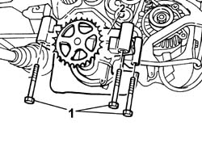
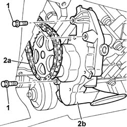

1084B10 ENGINE OIL PUMP - R + R WITH CRANKCASE SUMP REMOVED
- Path
- Procedures > 10 ENGINE > 1084 ENGINE LUBRICATION > 1084B ENGINE OIL LUBRICATION CIRCUIT > 1084B10 ENGINE OIL PUMP - R + R WITH CRANKCASE SUMP REMOVED
- Kind
- repair procedure (removal / refitting; the operation number is the code)
- Applies to
- engines: 2.0 16V JTD, 2.2 16V JTD; all production periods
- Interactive page
- https://sloeber94.github.io/elrnDB-fUlss/en/#/179007163
Applies to: engines: 2.0 16V JTD; all production periods
 Removing
Removing
 Refitting
Refitting1. Undo the fixing bolts.
2. Remove the oil pump complete with engine oil intake duct.

Applies to: engines: 2.0 16V JTD; all production periods
Refitting
Removing- Fit the engine oil pump fitting it on the driven gear on the chain and tighten the bolts to the recommended torque.
Applies to: engines: 2.2 16V JTD; all production periods
Removing
Refitting1. Undo the bolts fixing the oil pump.
2. Release the pulley from the drive chain (2a) and remove the oil pump (2b).

Applies to: engines: 2.2 16V JTD; all production periods
Refitting
Removing- Place the oil pump in position fitting the pulley on the drive chain.
- Tighten the bolts fixing the oil pump to the balancing shaft assembly and tighten to torque.